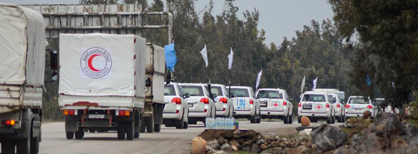
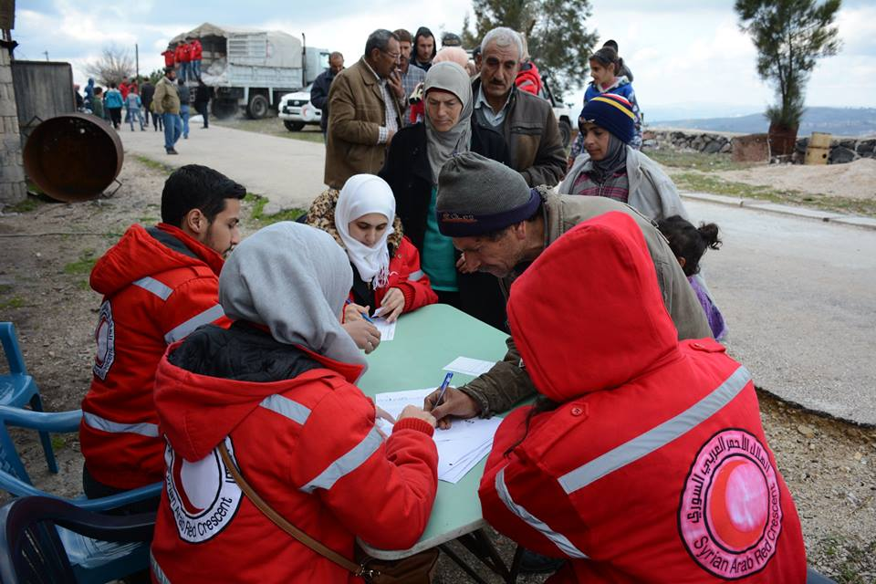
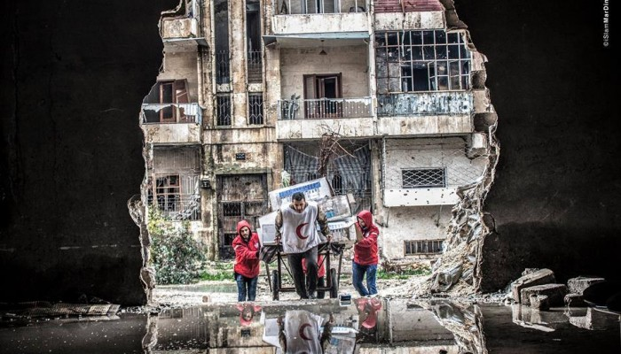

- 
- 
- 
About the organization
The Syrian Arab Red Crescent is a humanitarian organization with financial and administrative independence with a legal personality.
The organization was established by Presidential Decree No. 540 of 1942 and Decree No. 117 of 1966 regulating the work of the Organization.
Recognized by the International Committee of the Red Cross in Geneva under Circular No. 375 of 1946 and is a member of the International Movement, the International Federation of Red Cross and Red Crescent Societies in Geneva and the Arab General Secretariat of the Arab Red Cross and Red Crescent Societies.
It has a main center and 14 branches distributed in all governorates, in addition to 75 branch divisions.
Decisions
- Humanity
- impartiality
- Neutrality
- Autonomy
- Voluntary service
- Unit
- universal
The International Red Cross and Red Crescent Movement emerged from the desire to provide relief to war-wounded without discrimination.
It continues its efforts at the international and national levels to prevent and alleviate human suffering wherever it may be, to protect life and health, to ensure human dignity and to promote understanding.
The International Red Cross and Red Crescent Movement does not discriminate against nationalities, races, classes, religions or political beliefs. It aims only at eliminating human suffering and giving priority to situations requiring urgent action.
To maintain the confidence of all, the Movement shall refrain from engaging in any hostile acts or in matters related to political, religious, racial or ideological matterز
The Red Cross and Red Crescent Movement is independent. Although the National Societies act as auxiliary bodies to their public authorities, which carry out humanitarian activities and are subject to the laws in force in their country, they must always maintain their independence so that they can act in accordance with the principles of the Movement in all cases.
Red Cross and Red Crescent Movement for voluntary relief does not seek any profit.
There are no more than one Red Cross / Red Crescent Society in each country and its services must be accessible to all and all over the country.
The International Red Cross and Red Crescent Movement is a global movement in which all associations have the same rights and are committed to cooperation.